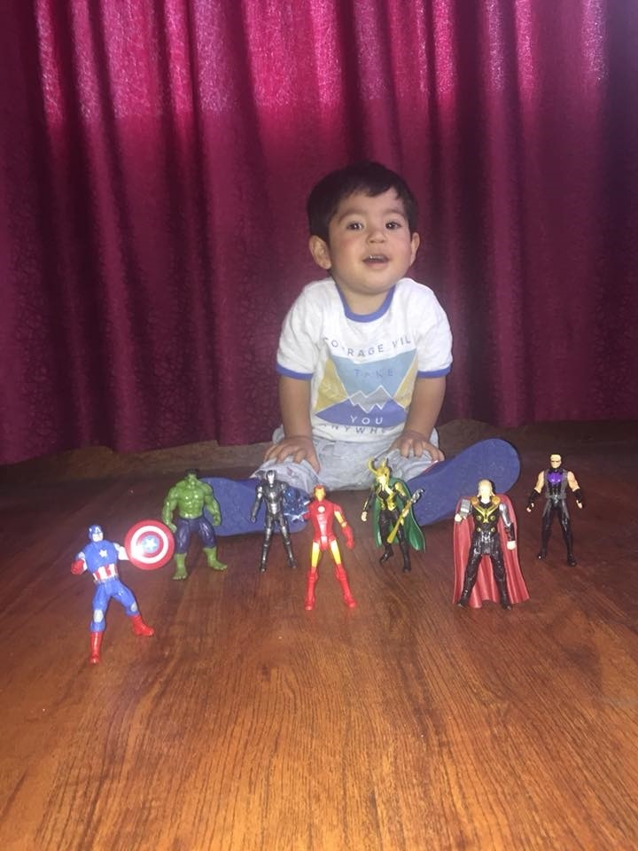

¡Hey! Amigo. Hola bienvenido a mi pasado aquí te presentare cuatro momentos importantes que han marcado mi vida. Pienso que estos acontecimientos han moldeado mi ser y han formado a la persona que hoy en día soy:
Mis Recuerdos
El Viejo y Peludo
Para empezar con este momento te debo explicar que es el viejo y peludo. Viejo y Peludo es una manera de nombrar al mejor colegio de la ciudad de Cuenca, el “Benigno Malo”. Tuve la suerte de pertenecer a esta gloriosa institución de educación secundaria y sobre todo impregnarme de el verdadero amor hacia un lugar físico, pues aquí pasé aproximadamente 4800 horas y viví la etapa más bonita de mi vida. Realmente es una pena que ya se haya terminado.
Mi Sobrino
Sin pensarlo dos veces afirmaría que aquel día en el que nació mi sobrino fue uno de los momentos más especiales de mi vida. Puedo recordar aquella sensación que brotaba de lo más profundo de mí alma y por primera vez entendía que el mejor regalo que te puede obsequiar tu hermano es una personita para quien eres todo un ídolo. Por eso te quiero mucho Maximiliano.

La Música
Tengo que admitir que lo único que puede mejorar un momento perfecto o uno extremadamente deprimente a mi parecer es la música, tengo varias razones para argumentar el aforismo anterior, sin embargo, solo diré que no hay por que tratar de entender lo que digo, solo basta con enchufar tu radio, colocar tu emisora preferida y disfrutarla a media noche (para mi esta es la más genial) o conectar tus audífonos al celular, regular el volumen y escuchar tu canción preferida. Cuando tenía 16 años me di cuenta de este detalle y me dije “Si tanto me gusta la música, debería aprender a tocar un instrumento”. Fue así como empecé a tocar la guitarra y hoy en día es uno de mis pasatiempos favoritos. Dicho esto, quiero compartir contigo mi canción favorita, espero que la disfrutes igual que yo.
El Limbo
Limbo fue para mí los meses más duros de mi vida, paso este año, si en el 2018, pues me acaba de graduar en el mes de julio, eso significaba abandonar el lugar que más amaba en todo el mundo, dejar a mis amigos, profesores, amores, a mi Benigno. Abandonar el lugar donde había dejado todo y entendí por primera vez que nada es por siempre y que debes aprovecharlo cuando lo tienes. Después pasar por el duro proceso para obtener un cupo en la” Universidad Estatal de Cuenca”, fue muy complicado al menos para mí. Cada vez que regreso a esos días casi puedo sentir esa sensación de intranquilidad y terror profundo hacia el futuro.
¿Por qué le llamo Limbo a esta sección?, es simple, pues al salir del colegio me encontraba en medio de la nada, sin un cupo para la universidad, sin mi lugar favorito, no sabía que hacer con mi vida. Sin embargo, gracias al esfuerzo que puse logre entrar a la universidad y seguir algo a lo que era afín, las Telecomunicaciones.